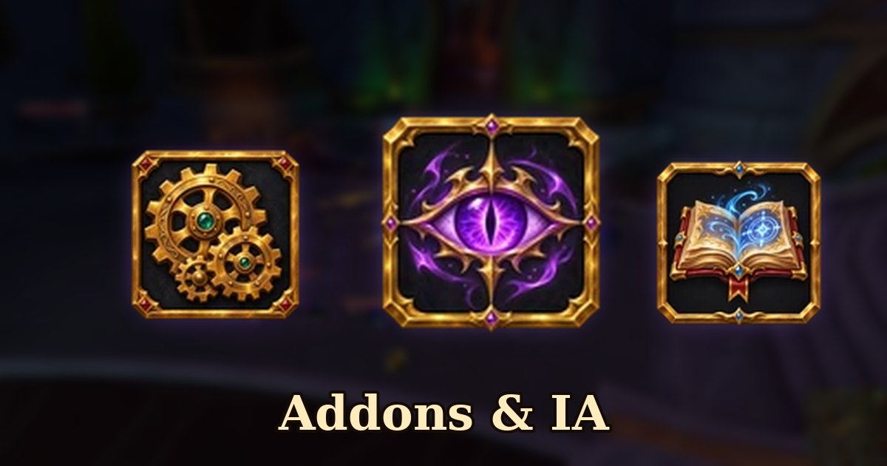

Les addons créés par IA se multiplient
6 novembre 2026
Avec le lancement de WoW Forever, les addons générés par intelligence artificielle fleurissent. Une partie de la communauté commence à s'en inquiéter.

Des copies d'addons existants
Plusieurs développeurs reconnus constatent que des addons « faits par IA » reprennent leur code presque à l'identique. C'est le cas de plusmouse, l'auteur d'Auctionator, Baganator et Platynator : certaines de ses demandes de retrait sur CurseForge ont abouti, et il a rendu privés plusieurs de ses dépôts GitHub pour limiter les copies.
Côté joueurs, le reproche revient souvent : on trouve désormais de nombreuses variantes presque identiques d'un même addon, sans savoir si elles ont été testées ni si elles seront mises à jour.
Warcraft Logs serre la vis
Warcraft Logs reçoit au moins une demande commerciale par jour pour aspirer de grandes quantités de données. Sa maison mère, Archon, limite donc les requêtes les plus lourdes, comme les recherches dans les classements. Les joueurs connectés gardent un accès normal à leurs propres rapports, personnages et guildes, et un accès payant est prévu pour les applications commerciales.
Comment bien choisir ses addons
- Privilégie les auteurs connus, présents depuis longtemps dans la communauté WoW.
- Regarde si l'addon est mis à jour et si son auteur répond aux signalements de bugs.
- Méfie-toi des copies d'un addon célèbre publiées par un compte inconnu.
Source : JudgeHype, d'après une enquête de 404 Media.